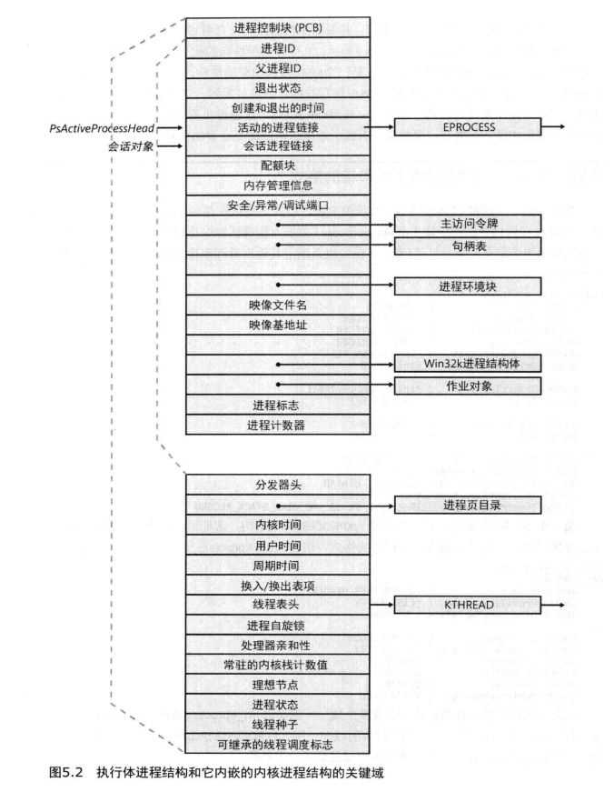
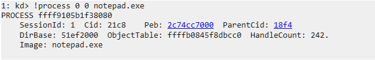
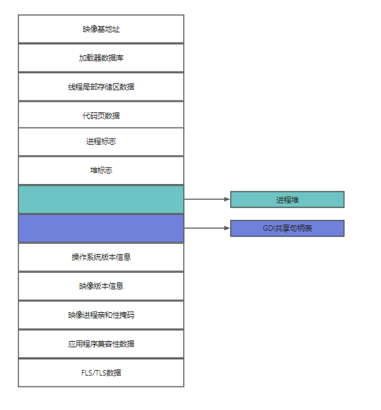

先看一下 执行体进程结构和它内嵌的内核进程结构的关键域 方便理解，具体的结构可使用 dt nt!_EPROCESS 查看

0x01、如何在windbg中查看该进程结构？
环境：Windbg双机调试模式，相关步骤查找
windows双机调试或bcdsedit。以 notepad.exe(记事本) 为例，win+R 运行 notepad。输入以下命令得到 notepad 的进程相关信息
!process 0 0 notepad.exe输出如下所示：

在这里获取到 notepad 的进程id为 ffff9105b1f38080。 有图可知，整个 notepad.exe 的保存结构为一个
_EPROCESS，进行下一步，查看进程：dt nt!_EPROCESS ffff9105b1f38080输出如下所示：
1: kd> !openpid ffff9105b1f38080 No export openpid found 1: kd> dt nt!_EPROCESS ffff9105b1f38080 +0x000 Pcb : _KPROCESS +0x438 ProcessLock : _EX_PUSH_LOCK +0x440 UniqueProcessId : 0x00000000`000021c8 Void +0x448 ActiveProcessLinks : _LIST_ENTRY [ 0xffff9105`af299748 - 0xffff9105`af8484c8 ] +0x458 RundownProtect : _EX_RUNDOWN_REF +0x460 Flags2 : 0xd000 +0x460 JobNotReallyActive : 0y0 +0x460 AccountingFolded : 0y0 +0x460 NewProcessReported : 0y0 +0x460 ExitProcessReported : 0y0 +0x460 ReportCommitChanges : 0y0 +0x460 LastReportMemory : 0y0 +0x460 ForceWakeCharge : 0y0 +0x460 CrossSessionCreate : 0y0 +0x460 NeedsHandleRundown : 0y0 +0x460 RefTraceEnabled : 0y0 +0x460 PicoCreated : 0y0 +0x460 EmptyJobEvaluated : 0y0 +0x460 DefaultPagePriority : 0y101 +0x460 PrimaryTokenFrozen : 0y1 +0x460 ProcessVerifierTarget : 0y0 +0x460 RestrictSetThreadContext : 0y0 +0x460 AffinityPermanent : 0y0 +0x460 AffinityUpdateEnable : 0y0 +0x460 PropagateNode : 0y0 +0x460 ExplicitAffinity : 0y0 +0x460 ProcessExecutionState : 0y00 +0x460 EnableReadVmLogging : 0y0 +0x460 EnableWriteVmLogging : 0y0 +0x460 FatalAccessTerminationRequested : 0y0 +0x460 DisableSystemAllowedCpuSet : 0y0 +0x460 ProcessStateChangeRequest : 0y00 +0x460 ProcessStateChangeInProgress : 0y0 +0x460 InPrivate : 0y0 +0x464 Flags : 0x144d0c01 +0x464 CreateReported : 0y1 +0x464 NoDebugInherit : 0y0 +0x464 ProcessExiting : 0y0 +0x464 ProcessDelete : 0y0 +0x464 ManageExecutableMemoryWrites : 0y0 +0x464 VmDeleted : 0y0 +0x464 OutswapEnabled : 0y0 +0x464 Outswapped : 0y0 +0x464 FailFastOnCommitFail : 0y0 +0x464 Wow64VaSpace4Gb : 0y0 +0x464 AddressSpaceInitialized : 0y11 +0x464 SetTimerResolution : 0y0 +0x464 BreakOnTermination : 0y0 +0x464 DeprioritizeViews : 0y0 +0x464 WriteWatch : 0y0 +0x464 ProcessInSession : 0y1 +0x464 OverrideAddressSpace : 0y0 +0x464 HasAddressSpace : 0y1 +0x464 LaunchPrefetched : 0y1 +0x464 Background : 0y0 +0x464 VmTopDown : 0y0 +0x464 ImageNotifyDone : 0y1 +0x464 PdeUpdateNeeded : 0y0 +0x464 VdmAllowed : 0y0 +0x464 ProcessRundown : 0y0 +0x464 ProcessInserted : 0y1 +0x464 DefaultIoPriority : 0y010 +0x464 ProcessSelfDelete : 0y0 +0x464 SetTimerResolutionLink : 0y0 +0x468 CreateTime : _LARGE_INTEGER 0x01d9f901`1100d7bf +0x470 ProcessQuotaUsage : [2] 0x3a58 +0x480 ProcessQuotaPeak : [2] 0x3a98 +0x490 PeakVirtualSize : 0x00000201`09c0f000 +0x498 VirtualSize : 0x00000201`09c0f000 +0x4a0 SessionProcessLinks : _LIST_ENTRY [ 0xffff9105`b1681520 - 0xffff9105`af848520 ] +0x4b0 ExceptionPortData : 0xffff9105`aa569da0 Void +0x4b0 ExceptionPortValue : 0xffff9105`aa569da0 +0x4b0 ExceptionPortState : 0y000 +0x4b8 Token : _EX_FAST_REF +0x4c0 MmReserved : 0 +0x4c8 AddressCreationLock : _EX_PUSH_LOCK +0x4d0 PageTableCommitmentLock : _EX_PUSH_LOCK +0x4d8 RotateInProgress : (null) +0x4e0 ForkInProgress : (null) +0x4e8 CommitChargeJob : (null) +0x4f0 CloneRoot : _RTL_AVL_TREE +0x4f8 NumberOfPrivatePages : 0x238 +0x500 NumberOfLockedPages : 0 +0x508 Win32Process : 0xfffffe41`85f6d620 Void +0x510 Job : (null) +0x518 SectionObject : 0xffffb084`5ea9d3b0 Void +0x520 SectionBaseAddress : 0x00007ff6`477c0000 Void +0x528 Cookie : 0x4118bb70 +0x530 WorkingSetWatch : (null) +0x538 Win32WindowStation : 0x00000000`000000b4 Void +0x540 InheritedFromUniqueProcessId : 0x00000000`000018f4 Void +0x548 OwnerProcessId : 0x18f6 +0x550 Peb : 0x0000002c`74cc7000 _PEB +0x558 Session : 0xffffc180`6a1ec000 _MM_SESSION_SPACE +0x560 Spare1 : (null) +0x568 QuotaBlock : 0xffff9105`aa072cc0 _EPROCESS_QUOTA_BLOCK +0x570 ObjectTable : 0xffffb084`5f8dbcc0 _HANDLE_TABLE +0x578 DebugPort : (null) +0x580 WoW64Process : (null) +0x588 DeviceMap : 0xffffb084`5e99c190 Void +0x590 EtwDataSource : 0xffff9105`b4004550 Void +0x598 PageDirectoryPte : 0 +0x5a0 ImageFilePointer : 0xffff9105`acb3fc30 _FILE_OBJECT +0x5a8 ImageFileName : [15] "notepad.exe" +0x5b7 PriorityClass : 0x2 '' +0x5b8 SecurityPort : (null) +0x5c0 SeAuditProcessCreationInfo : _SE_AUDIT_PROCESS_CREATION_INFO +0x5c8 JobLinks : _LIST_ENTRY [ 0x00000000`00000000 - 0x00000000`00000000 ] +0x5d8 HighestUserAddress : 0x00007fff`ffff0000 Void +0x5e0 ThreadListHead : _LIST_ENTRY [ 0xffff9105`af887a68 - 0xffff9105`aad93528 ] +0x5f0 ActiveThreads : 6 +0x5f4 ImagePathHash : 0xc5670914 +0x5f8 DefaultHardErrorProcessing : 1 +0x5fc LastThreadExitStatus : 0n1 +0x600 PrefetchTrace : _EX_FAST_REF +0x608 LockedPagesList : (null) +0x610 ReadOperationCount : _LARGE_INTEGER 0x0 +0x618 WriteOperationCount : _LARGE_INTEGER 0x0 +0x620 OtherOperationCount : _LARGE_INTEGER 0x30 +0x628 ReadTransferCount : _LARGE_INTEGER 0x0 +0x630 WriteTransferCount : _LARGE_INTEGER 0x0 +0x638 OtherTransferCount : _LARGE_INTEGER 0x210 +0x640 CommitChargeLimit : 0 +0x648 CommitCharge : 0x31a +0x650 CommitChargePeak : 0x31a +0x680 Vm : _MMSUPPORT_FULL +0x7c0 MmProcessLinks : _LIST_ENTRY [ 0xffff9105`af299ac0 - 0xffff9105`af848840 ] +0x7d0 ModifiedPageCount : 1 +0x7d4 ExitStatus : 0n259 +0x7d8 VadRoot : _RTL_AVL_TREE +0x7e0 VadHint : 0xffff9105`ad4c8c20 Void +0x7e8 VadCount : 0x6a +0x7f0 VadPhysicalPages : 0 +0x7f8 VadPhysicalPagesLimit : 0 +0x800 ALPCContext : _ALPC_PROCESS_CONTEXT +0x820 TimerResolutionLink : _LIST_ENTRY [ 0x00000000`00000000 - 0x00000000`00000000 ] +0x830 TimerResolutionStackRecord : (null) +0x838 RequestedTimerResolution : 0 +0x83c SmallestTimerResolution : 0 +0x840 ExitTime : _LARGE_INTEGER 0x0 +0x848 InvertedFunctionTable : (null) +0x850 InvertedFunctionTableLock : _EX_PUSH_LOCK +0x858 ActiveThreadsHighWatermark : 6 +0x85c LargePrivateVadCount : 0 +0x860 ThreadListLock : _EX_PUSH_LOCK +0x868 WnfContext : 0xffffb084`5fe9e180 Void +0x870 ServerSilo : (null) +0x878 SignatureLevel : 0 '' +0x879 SectionSignatureLevel : 0 '' +0x87a Protection : _PS_PROTECTION +0x87b HangCount : 0y000 +0x87b GhostCount : 0y000 +0x87b PrefilterException : 0y0 +0x87c Flags3 : 0x41c000 +0x87c Minimal : 0y0 +0x87c ReplacingPageRoot : 0y0 +0x87c Crashed : 0y0 +0x87c JobVadsAreTracked : 0y0 +0x87c VadTrackingDisabled : 0y0 +0x87c AuxiliaryProcess : 0y0 +0x87c SubsystemProcess : 0y0 +0x87c IndirecTCPuSets : 0y0 +0x87c RelinquishedCommit : 0y0 +0x87c HighGraphicsPriority : 0y0 +0x87c CommitFailLogged : 0y0 +0x87c ReserveFailLogged : 0y0 +0x87c SystemProcess : 0y0 +0x87c HideImageBaseAddresses : 0y0 +0x87c AddressPolicyFrozen : 0y1 +0x87c ProcessFirstResume : 0y1 +0x87c ForegroundExternal : 0y1 +0x87c ForegroundSystem : 0y0 +0x87c HighMemoryPriority : 0y0 +0x87c EnableProcessSuspendResumeLogging : 0y0 +0x87c EnableThreadSuspendResumeLogging : 0y0 +0x87c SecurityDomainChanged : 0y0 +0x87c SecurityFreezeComplete : 0y1 +0x87c VmProcessorHost : 0y0 +0x87c VmProcessorHostTransition : 0y0 +0x87c Altsyscall : 0y0 +0x87c TimerResolutionIgnore : 0y0 +0x87c DisallowUserTerminate : 0y0 +0x880 DeviceAsid : 0n0 +0x888 SvmData : (null) +0x890 SvmProcessLock : _EX_PUSH_LOCK +0x898 SvmLock : 0 +0x8a0 SvmProcessDeviceListHead : _LIST_ENTRY [ 0xffff9105`b1f38920 - 0xffff9105`b1f38920 ] +0x8b0 LastFreezeInterruptTime : 0 +0x8b8 DiskCounters : 0xffff9105`b1f38ac0 _PROCESS_DISK_COUNTERS +0x8c0 PicoContext : (null) +0x8c8 EnclaveTable : (null) +0x8d0 Enclavenumber : 0 +0x8d8 EnclaveLock : _EX_PUSH_LOCK +0x8e0 HighPriorityFaultsAllowed : 0 +0x8e8 EnergyContext : 0xffff9105`b1f38ae8 _PO_PROCESS_ENERGY_CONTEXT +0x8f0 VmContext : (null) +0x8f8 SequenceNumber : 0xe9 +0x900 CreateInterruptTime : 0xe8096541 +0x908 CreateUnbiasedInterruptTime : 0xe8096541 +0x910 TotalUnbiasedFrozenTime : 0 +0x918 LastAppStateUpdateTime : 0xe8096541 +0x920 LastAppStateUptime : 0y0000000000000000000000000000000000000000000000000000000000000 (0) +0x920 LastAppState : 0y000 +0x928 SharedCommitCharge : 0xa2d +0x930 SharedCommitLock : _EX_PUSH_LOCK +0x938 SharedCommitLinks : _LIST_ENTRY [ 0xffffb084`5cc16358 - 0xffffb084`5e777688 ] +0x948 AllowedCpuSets : 0 +0x950 DefaultCpuSets : 0 +0x948 AllowedCpuSetsIndirect : (null) +0x950 DefaultCpuSetsIndirect : (null) +0x958 DiskIoAttribution : (null) +0x960 DxgProcess : 0xffffb084`5fe76de0 Void +0x968 Win32KFilterSet : 0 +0x970 ProcessTimerDelay : _PS_INTERLOCKED_TIMER_DELAY_VALUES +0x978 KTimerSets : 0 +0x97c KTimer2Sets : 0 +0x980 ThreadTimerSets : 5 +0x988 VirtualTimerListLock : 0 +0x990 VirtualTimerListHead : _LIST_ENTRY [ 0xffff9105`b1f38a10 - 0xffff9105`b1f38a10 ] +0x9a0 WakeChannel : _WNF_STATE_NAME +0x9a0 WakeInfo : _PS_PROCESS_WAKE_INFORMATION +0x9d0 MitigationFlags : 0x21 +0x9d0 MitigationFlagsValues : <anonymous-tag> +0x9d4 MitigationFlags2 : 0x40000000 +0x9d4 MitigationFlags2Values : <anonymous-tag> +0x9d8 PartitionObject : 0xffff9105`a589c260 Void +0x9e0 SecurityDomain : 0x00000001`00000032 +0x9e8 ParentSecurityDomain : 0x00000001`00000032 +0x9f0 CoverageSamplerContext : (null) +0x9f8 MmHotPatchContext : (null) +0xa00 DynamicEHContinuationTargetsTree : _RTL_AVL_TREE +0xa08 DynamicEHContinuationTargetsLock : _EX_PUSH_LOCK +0xa10 DynamicEnforcedCetCompatibleRanges : _PS_DYNAMIC_ENFORCED_ADDRESS_RANGES +0xa20 DisabledComponentFlags : 0 +0xa28 PathRedirectionHashes : (null)这里可以看到很多信息，比如进程的 Pcb（进程控制块）的结构体为
_KPROCESS。进程的映像名(ImageFileName)为notepad.exe
0x02、PEB与上述 _EPROCESS 的关系
上述看到的信息
_EPROCESS均位于系统空间中。而进程环境块（PEB）是一个比较特殊的存在，它位于进程的地址空间中。因为PEB的特殊性，比如环境变量、进程信息、线程等不同，因此PEB可以看做是一个私有的变量，定义了每个程序内部所需要的成员。有关PEB结构体可以在主页中搜索
WOW64通过PEB获取32/64位进程模块信息查看。
补充：
在 windbg 调试中，默认使用 !PEB 命令时，查看的是 CPU 0 上当前运行的线程所属进程的进程环境块（PEB）。 如果要查看具体某一进程的环境块，需要先切换到该进程空间，再使用 !PEB 命令查看。

PEB概述
PEB(Process Environment Block), 即进程环境块。不同于 EPROCESS和相关的数据结构（存储于系统空间中），进程环境块位于进程地址空间中（因为它包含一些需要由模式模式代码来修改的信息）。PEB包含了映像加载器、堆管理器以及其他需要从用户迷失访问它的Windows组件所需的信息。PEB域如下所示：

PEB 实例
在内核调试器中利用 !PEB 命令，你可以将 PEB 结构转储出来，会显示 CPU 0 上当前运行着的线程所属进程的PEB。
如下所示为进程 CPU 0 上运行线程所属进程的PEB
1: kd> !peb
PEB at 000000e4829b9000
InheritedAddressSpace: No
ReadImageFileExecOptions: No
BeingDebugged: No
ImageBaseAddress: 00007ff6cfaf0000
NtGlobalFlag: 0
NtGlobalFlag2: 0
Ldr 00007ffe587bb4c0
Ldr.Initialized: Yes
Ldr.InInitializationOrderModuleList: 00000264d3e03ba0 . 00000264d3e690a0
Ldr.InLoadOrderModuleList: 00000264d3e03d10 . 00000264d3e69080
Ldr.InMemoryOrderModuleList: 00000264d3e03d20 . 00000264d3e69090
Base TimeStamp Module
7ff6cfaf0000 058e175a Dec 15 00:22:50 1972 C:\Windows\System32\svchost.exe
7ffe58650000 4544b4a1 Oct 29 22:03:13 2006 C:\Windows\SYSTEM32\ntdll.dll
7ffe56bc0000 d714134a May 06 10:04:58 2084 C:\Windows\System32\KERNEL32.DLL
7ffe561a0000 0e9c5eae Oct 08 11:21:18 1977 C:\Windows\System32\KERNELBASE.dll
7ffe56e80000 54cbb3a3 Jan 31 00:38:59 2015 C:\Windows\System32\sechost.dll
7ffe56c80000 f564aeb4 Jun 18 23:37:24 2100 C:\Windows\System32\RPCRT4.dll
7ffe55ff0000 2bd748bf Apr 23 09:39:11 1993 C:\Windows\System32\ucrtbase.dll
7ffe576c0000 1cae0c4a Apr 01 09:54:18 1985 C:\Windows\System32\combase.dll
7ffe53d00000 f0713fcd Oct 30 14:42:21 2097 C:\Windows\SYSTEM32\kernel.appcore.dll
7ffe57da0000 564f9f39 Nov 21 06:31:21 2015 C:\Windows\System32\msvcrt.dll
7ffe56120000 8fb0d55f May 24 07:27:27 2046 C:\Windows\System32\bcryptPrimitives.dll
7ffe57050000 13a6e19d Jun 13 08:23:57 1980 C:\Windows\System32\user32.dll
7ffe560f0000 0dcd0213 May 04 04:26:59 1977 C:\Windows\System32\win32u.dll
7ffe57d10000 a19db164 Dec 04 01:05:40 2055 C:\Windows\System32\GDI32.dll
7ffe55e80000 c4d50445 Aug 24 08:03:17 2074 C:\Windows\System32\gdi32full.dll
7ffe55d90000 39255ccf May 19 23:25:03 2000 C:\Windows\System32\msvcp_win.dll
7ffe1e780000 fe47fc1d Mar 10 20:14:21 2105 c:\windows\system32\wscsvc.dll
7ffe54a30000 9f6e1bc3 Oct 05 14:10:11 2054 c:\windows\system32\FirewallAPI.dll
7ffe551e0000 40054298 Jan 14 21:22:32 2004 c:\windows\system32\DNSAPI.dll
7ffe551d0000 fcf57d1b Jun 27 02:06:19 2104 c:\windows\system32\netutils.dll
7ffe55190000 cf9a121a May 15 14:41:30 2080 C:\Windows\SYSTEM32\IPHLPAPI.DLL
7ffe57a20000 aa9c8581 Sep 14 18:48:33 2060 C:\Windows\System32\NSI.dll
7ffe54a00000 752d58d6 Apr 18 21:02:14 2032 c:\windows\system32\fwbase.dll
7ffe55720000 409dec87 May 09 16:32:07 2004 C:\Windows\SYSTEM32\WLDP.DLL
7ffe56830000 15fd8d3b Sep 10 10:51:39 1981 C:\Windows\System32\advapi32.dll
7ffe1e2c0000 1ef1f3ef Jun 15 06:45:03 1986 C:\Windows\SYSTEM32\VbsApi.dll
7ffe1e280000 873e8a3a Nov 26 04:06:18 2041 C:\Windows\SYSTEM32\SecurityCenterBroker.dll
7ffe56520000 ad1aff4d Jan 12 01:54:21 2062 C:\Windows\System32\CRYPT32.dll
7ffe55f90000 3327e4fa Mar 13 19:28:58 1997 C:\Windows\System32\WINTRUST.dll
7ffe558a0000 9dcceb6f Nov 23 03:28:47 2053 C:\Windows\SYSTEM32\MSASN1.dll
7ffe56a40000 db9f728a Oct 05 20:37:30 2086 C:\Windows\System32\clbcatq.dll
7ffe56db0000 f963cc3a Aug 04 00:52:10 2102 C:\Windows\System32\OLEAUT32.dll
7ffe4a290000 d22ad5a9 Sep 25 18:42:49 2081 C:\Windows\system32\wbem\wbemprox.dll
7ffe57ca0000 aff3315b Jul 18 10:18:03 2063 C:\Windows\System32\WS2_32.dll
7ffe4a200000 18d25282 Mar 14 04:54:26 1983 C:\Windows\SYSTEM32\wbemcomn.dll
7ffe46290000 ee86f561 Oct 23 17:14:09 2096 C:\Windows\system32\wbem\wbemsvc.dll
7ffe46370000 9d244220 Jul 18 05:05:36 2053 C:\Windows\system32\wbem\fastprox.dll
7ffe45f80000 690ba034 Nov 06 03:06:28 2025 C:\Windows\SYSTEM32\amsi.dll
7ffe55c80000 fa786637 Mar 01 20:14:47 2103 C:\Windows\SYSTEM32\USERENV.dll
7ffe55cc0000 e5f6eb70 Apr 05 00:23:12 2092 C:\Windows\SYSTEM32\profapi.dll
7ffe45f00000 abeb5625 May 26 17:55:49 2061 C:\ProgramData\Microsoft\Windows Defender\Platform\4.18.23080.2006-0\MpOav.dll
7ffe56f20000 8c6c47c7 Aug 27 18:28:23 2044 C:\Windows\System32\ole32.dll
7ffe4c2d0000 14531102 Oct 21 22:56:02 1980 C:\Windows\system32\version.dll
7ffe4f9e0000 70a9de78 Nov 24 10:12:08 2029 c:\windows\system32\WINHTTP.dll
7ffe55c40000 c6cd965c Sep 11 01:29:00 2075 C:\Windows\System32\sspicli.dll
7ffe546a0000 c156fd2a Oct 15 04:46:34 2072 C:\Windows\SYSTEM32\gpapi.dll
7ffe467c0000 c8c52eef Sep 27 01:10:07 2076 C:\Windows\System32\SecurityCenterBrokerPS.dll
SubSystemData: 0000000000000000
ProcessHeap: 00000264d3ca0000
ProcessParameters: 00000264d3e03300
CurrentDirectory: 'C:\Windows\system32\'
WindowTitle: 'C:\Windows\System32\svchost.exe'
ImageFile: 'C:\Windows\System32\svchost.exe'
CommandLine: 'C:\Windows\System32\svchost.exe -k LocalServiceNetworkRestricted -p'
DllPath: '< Name not readable >'
Environment: 00000264d3e027f0
ALLUSERSPROFILE=C:\ProgramData
APPDATA=C:\Windows\ServiceProfiles\LocalService\AppData\Roaming
CommonProgramFiles=C:\Program Files\Common Files
CommonProgramFiles(x86)=C:\Program Files (x86)\Common Files
CommonProgramW6432=C:\Program Files\Common Files
COMPUTERNAME=DESKTOP-IMFKJGI
ComSpec=C:\Windows\system32\cmd.exe
DriverData=C:\Windows\System32\Drivers\DriverData
LOCALAPPDATA=C:\Windows\ServiceProfiles\LocalService\AppData\Local
NUMBER_OF_PROCESSORS=2
OS=Windows_NT
Path=C:\Windows\system32;C:\Windows;C:\Windows\System32\Wbem;C:\Windows\System32\WindowsPowerShell\v1.0\;C:\Windows\System32\OpenSSH\;C:\Windows\ServiceProfiles\LocalService\AppData\Local\Microsoft\WindowsApps
PATHEXT=.COM;.EXE;.BAT;.CMD;.VBS;.VBE;.JS;.JSE;.WSF;.WSH;.MSC
PROCESSOR_ARCHITECTURE=AMD64
PROCESSOR_IDENTIFIER=Intel64 Family 6 Model 158 Stepping 9, GenuineIntel
PROCESSOR_LEVEL=6
PROCESSOR_REVISION=9e09
ProgramData=C:\ProgramData
ProgramFiles=C:\Program Files
ProgramFiles(x86)=C:\Program Files (x86)
ProgramW6432=C:\Program Files
PSModulePath=%ProgramFiles%\WindowsPowerShell\Modules;C:\Windows\system32\WindowsPowerShell\v1.0\Modules
PUBLIC=C:\Users\Public
SystemDrive=C:
SystemRoot=C:\Windows
TEMP=C:\Windows\SERVIC~1\LOCALS~1\AppData\Local\Temp
TMP=C:\Windows\SERVIC~1\LOCALS~1\AppData\Local\Temp
USERDOMAIN=NT AUTHORITY
USERNAME=LOCAL SERVICE
USERPROFILE=C:\Windows\ServiceProfiles\LocalService
windir=C:\Windows查看W32PROCESS
1: kd> dt win32k!_W32PROCESS ffffb98ae4682300
+0x000 Process : 0x00000000`00000003 _EPROCESS
+0x008 RefCount : 0xe4665b60
+0x00c W32PF_Flags : 0xffffb98a
+0x010 InputIdleEvent : 0xffffb98a`e7946f40 _KEVENT
+0x018 StartCursorHideTime : 0xe4682318
+0x020 NextStart : 0xffffb98a`e4682318 _W32PROCESS
+0x028 pDCAttrList : 0x00000000`2ffdd002 Void
+0x030 pBrushAttrList : 0xffffb98a`e45f5378 Void
+0x038 W32Pid : 0xe4064378
+0x03c GDIHandleCount : 0n-18038
+0x040 GDIHandleCountPeak : 0
+0x044 UserHandleCount : 0n0
+0x048 UserHandleCountPeak : 0
+0x050 GDIPushLock : _EX_PUSH_LOCK
+0x058 GDIEngUserMemAllocTable : _RTL_AVL_TABLE
+0x0c0 GDIDcAttrFreeList : _LIST_ENTRY [ 0x00000000`00000000 - 0x00000000`00000000 ]
+0x0d0 GDIBrushAttrFreeList : _LIST_ENTRY [ 0x00000000`00000000 - 0x00000000`00000000 ]
+0x0e0 GDIW32PIDLockedBitmaps : _LIST_ENTRY [ 0x00000000`00000000 - 0x00000000`00000000 ]
+0x0f0 hSecureGdiSharedHandleTable : (null)
+0x0f8 DxProcess : (null)
+0x100 DCompositionProcess : (null)
+0x108 UMPDSandboxingEnabled : 0
+0x110 pWakeReference : (null)
+0x118 defaultDpiContext : 0
+0x11c Dpi : 0
+0x120 bChangedGdiGammaRamp : 0y0
+0x120 bReadScreenBits : 0y0
+0x120 bWroteScreenBits : 0y0参考文献
- 《深入解析windows操作系统 第6版》